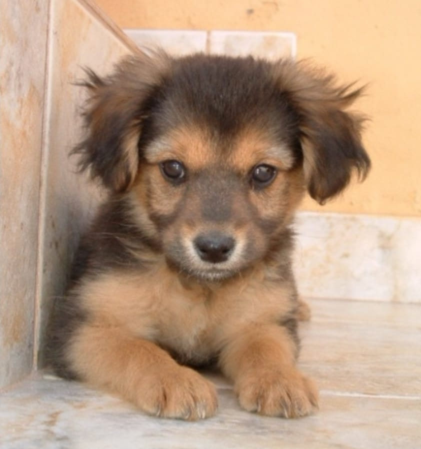
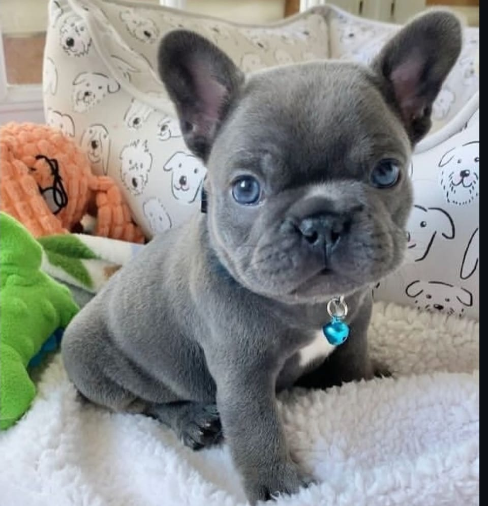

Adoção Responsável
Adotar é um ato de amor e responsabilidade. Cada cachorro disponível para adoção tem uma história e está à espera de uma nova chance de ser feliz. Ao escolher adotar, você não apenas ganha um companheiro leal, mas também transforma uma vida, oferecendo carinho, cuidado e um lar de verdade.
Processo de Adoção Seguro
Saiba como seguir etapas confiáveis, garantindo que a adoção seja segura para você e para o cachorro.
Passo a passo de um processo de adoção seguro:
- Pesquise ONGs e abrigos confiáveis.
- Visite o cão e observe seu comportamento.
- Peça documentos: vacinas e histórico.
- Faça uma adaptação inicial, se possível.
- Prepare a casa antes da chegada do cão.
- Leia e assine o contrato de adoção.
- Primeiros dias: deixe o ambiente calmo, faça uma adaptação lenta e leve ao veterinário.
ONGs e abrigos parceiros
Conheça instituições comprometidas com o bem-estar animal, onde você pode encontrar cães à espera de um lar amoroso.
Como ser um lar temporário
Aprenda a acolher cães temporariamente, oferecendo cuidados e carinho enquanto esperam pela adoção definitiva.
- O que é: Receber cães temporariamente, até que sejam adotados permanentemente.
- Benefícios: Ajuda a socializar o cão, permite observar comportamento e hábitos, e diminui a pressão sobre abrigos lotados.
- Cuidados: Preparar a casa, fornecer alimentação adequada, higiene, exercícios e acompanhar orientações da ONG.
- Impacto: Você contribui diretamente para salvar vidas, oferecendo amor e segurança enquanto o cão espera pelo lar definitivo.
Como ser um lar temporário:
- Converse com a ONG sobre responsabilidades.
- Prepare um espaço tranquilo e seguro.
- Monte um kit inicial: ração, cama, guia, brinquedos.
- Treine comandos básicos e hábitos de higiene.
- Documente comportamento com fotos e vídeos.
- Combine feiras de adoção com a ONG.
Checklist rápido de 30 dias:
- Dia 0: Visita ao veterinário, prepare um espaço seguro.
- Dia 1-3: Rotina calma, refeições leves, passeios curtos.
- Semana 1: Iniciar comandos básicos, observar sintomas.
- Semana 2: Socialização controlada.
- Semana 3: Reforço de comandos em locais diferentes.
- Semana 4: Fotos, relatório e avaliação de saúde.
Preparação para a Adoção
Dicas práticas para preparar sua casa e rotina, garantindo que o novo amigo se adapte com conforto e segurança.
- Casa segura: Retire objetos perigosos, bloqueie áreas que possam causar acidentes e prepare um espaço confortável para o cachorro.
- Itens essenciais: Comedouro e bebedouro, cama, brinquedos, coleira, guia e produtos de higiene.
- Saúde e cuidados: Tenha um veterinário de referência, mantenha vacinas e vermífugos em dia, e esteja preparado para consultas regulares.
- Adaptação emocional: Tenha paciência, respeite o ritmo do animal e estabeleça rotina de alimentação, passeios e brincadeiras.
- Envolvimento familiar: Todos os membros da família devem estar preparados para participar do cuidado e aprendizado com o novo amigo.
Adote
Adotar é um ato de amor que transforma vidas, oferecendo carinho e um novo começo para quem precisa.
Tobias • 3 Meses
Porte médio, saudável e brincalhão.
Luna • 5 Meses
Porte Pequeno, saudável e carinhosa.
Thor • 3 Meses
Porte pequeno, saudável e curioso.
Formulário de Adoção
Preencha os campos abaixo para manifestar interesse em adotar um de nossos amigos: